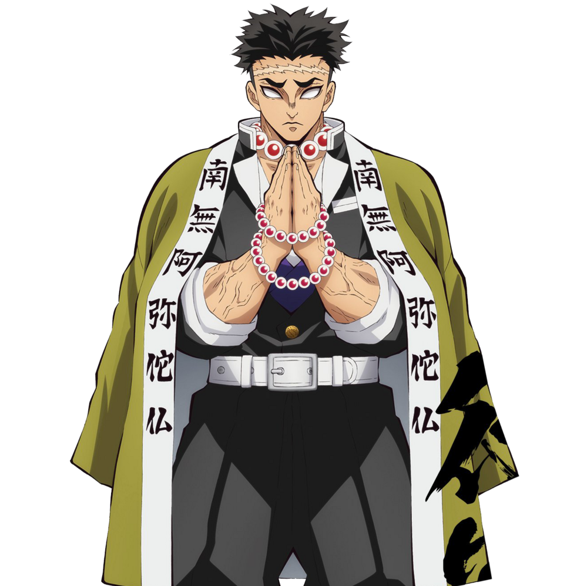

悲鳴嶼行冥（ひめじま ぎょうめい Himejima Gyoumei）
- 配音 : 杉田智和（日本）；黃天佑（台灣）；圖特哈蒙（中國大陸）；Crispin Freeman（美國）；何家裕（Viu）、（TVB）（香港）
-
鬼殺隊岩柱，岩之呼吸的使用者，同時也是實力當中最強的柱。是個打扮如僧侶風格的巨漢，僅僅是甩動手上的佛珠就能夠震撼周圍的人，即便是風柱·不死川實彌也對悲鳴嶼如此尊敬。他同時也是鬼殺隊中實力最強的頂尖者。額頭上有一條極長的傷痕，雙眼全盲，鬼殺隊制服外披著寫有「南無阿彌陀佛」字樣的棕色羽織。
日輪刀與其說是刀，不如說是流星錘鏈著單手斧。流星錘能夠大面積破壞鬼的身體部位從而拖延再生時間，單手斧加上流星錘的重力則是能讓斬擊的力量提升數倍，即使是上弦鬼月的脖子也能輕易砍下。中間鏈著的鎖鏈非常堅硬，即使是上弦之壹也無法將其斬斷，同時鎖鏈金屬的撞擊聲也能提供眼盲的劍士戰場資訊，是量身替悲鳴嶼所打造的殺鬼武器。
年輕時曾是寺廟的僧侶，收留一些孤苦無依的孩子並將他們當作自己的家人，然而其中一個名叫獪岳的孩子不但違反不能夜歸的規矩，甚至為保命而將鬼引進寺廟中。悲鳴嶼希望眾人不要驚慌好好的去躲起來，然而孩子們看他瘦弱的身驅加上雙眼全盲，覺得這種大人沒有用處而將之拋下逃走。除四歲的女孩沙代，其他自顧自逃跑的孩子都被鬼殺害。他為了救沙代與鬼死命相鬥直到天亮，最後換來的卻不是沙代的感謝，而是她對趕來的大人們說「那個人是殺人兇手」，讓他背上冤罪險些被處刑，也因此對孩子與人心失去信任。18歲時得到產屋敷相救而加入鬼殺隊，深得產屋敷信任。
在一次任務裡從惡鬼手中救下一對年幼的小姐妹・胡蝶香奈惠和胡蝶忍，使得胡蝶姐妹為了報恩而找上門來，並且表示為了成為鬼殺隊希望悲鳴嶼教她們劍術，悲鳴嶼因為過去的傷痛而不想再跟小孩有任何交集，奉勸她們忘記仇恨，去當一個普通人結婚活到終老，私底下也告訴香奈惠一個殘酷的事實，忍那瘦小的身軀根本沒辦法斬下鬼的頭顱，但仍無法改變兩姐妹的決心，於是悲鳴嶼給出了推動巨大岩石的難題藉此讓她們知難而退，但當他完成任務返家時，驚訝發現兩姐妹利用頭腦將岩石移動了一點點，因此被她們的毅力所撼動，答應會替兩姐妹尋找優秀的培育者，於是胡蝶姐妹在其推薦下成功最終通過選拔加入鬼殺隊，然而幾年後香奈惠也被鬼殺害，過去那個性格好強的忍也彷彿變了一個人似的，一舉一動都在模仿香奈惠，悲鳴嶼難過之餘，也在思考著自己當年讓兩姐妹加入鬼殺隊究竟是不是錯誤的選擇。
在柱合會議上討論炭治郎的裁決時，一邊感嘆、流淚，一邊隨眾柱決議處決炭治郎。音柱·宇髓天元在吉原篇曾說過他是正體不明的人士。煉刀師之村篇後從主公之妻天音和霞柱·時透無一郎那裡得知開紋一事，向眾人提出給下級隊員特訓藉此達成開紋條件的建議，擔任劍士們的肌肉強化訓練指導。在炭治郎完成自己設計的修行任務後提及自己的過去，從他純粹的言語中感覺自己得到救贖，決定相信炭治郎到最後。
被主公託以在他引爆炸彈後，困住鬼舞辻並斬下他的頭，卻被算計與其他柱一同受困無限城中。和實彌、玄彌、時透與上弦之壹·黑死牟交戰，並覺醒了斑紋，被黑死牟告知27歲才開紋的他絕對活不過今晚。後與無慘決戰時，利用雙手武器開啟「赫刀」，卻被無慘的廣範圍攻擊掃中，左腿斷裂，背部陷進牆壁。後在隱及愈史郎的治療下成功清醒，開始與清醒的眾人對決無慘，於無慘灰飛湮滅之後因傷勢過重，以將藥物留給其他人使用為由拒絕鬼殺隊員的治療，彌留之際看見從前在寺廟裡的孩子們前來迎接和道歉，知悉當時逃離他身邊的孩子是想要去幫忙和求助的實情後釋懷，含笑而終。漫畫最終話和單行本最終卷附錄說明行冥轉世為現代的幼稚園老師。
在鬼滅學園擔任公民老師與一年筍班班主任，非常喜歡貓。
在第一回人氣投票結果中，以3票獲得第62名。在第二回人氣投票結果中，以843票獲得第22名。